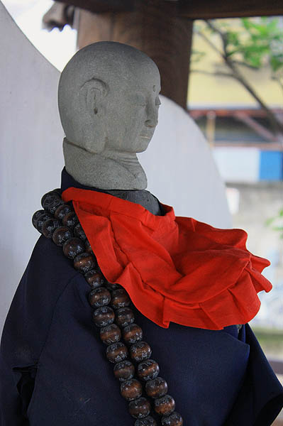

願行寺/東京都
縛られ地蔵がある願行寺。しかし実際に行ってみたらそれどころじゃなかった。
場所は品川区の京急某駅の近く。
高架の下にある、まるで取って付けたような駅。この改札を抜け、道路をわたるとそこはもう願行寺の寺域だ。

で、境内。
お寺の敷地のど真ん中、しかも本堂の真ん前を思いっきり電車が走っている。
いくら都内とはいえ中々ファンキーな光景だ。
その本堂。文化年間に建てられたものだという。天辺の宝珠がチャーミングですね。
そんなこんなで本日のメインディッシュ。縛られ地蔵である。
どういうわけか鐘楼の中に収まっている。
東京で縛られ地蔵といえば全身縄で縛られて巨大ミノムシみたいになっちゃってる葛飾、南蔵院の縛られ地蔵が有名だ。
↑葛飾南蔵院の縛られ地蔵
しかしここの縛られ地蔵も300年の歴史を有するというから葛飾の縛られ地蔵と歴史はどっこいどっこい、ということになろう。
でも縛られっぷりは一目瞭然。確かに縛られてはいるが、かなりの甘縛りじゃないですか。
しかも微妙に女子中学生の制服っぽいんすけど。
いや、そんなことが言いたいんじゃなかった！
胴体と頭部のアンバランスな点が気になっていたのだった。
近づいてみて納得。

頭、後付けですね。
お地蔵さんの後ろには様々なお地蔵さんの頭部が並んでいる。
まるで次の出番を待ちかねているように。
チョット生首チックで怖いですね。
このお地蔵さんは祈願に訪れた際に首を持って帰り、願いが叶った際には頭を倍にして返す、という倍々返却システムを採用しているのだ。だから頭は増える一方。
それにしても信仰対象の仏像の一番のキモである頭部、つまり御尊顔を祈願者が勝手に変えちゃうというシステムはあまりにも斬新過ぎやしませんか？
考えてみたら、この場合どのパーツが信仰の対象なんだろう？
頭は素人が作ってきて常に変化してるわ、身体は公立中学の制服みたいな着物で覆われてるわ…このお地蔵さんのどの部分を拝めばいいのだろう？
姿容はハッキリ見えているし、すぐ目の前に実在しているのに、突き詰めていくとあやふやになり霧散してしまう、実に不思議な存在のお地蔵さんなのだ。
そもそも考えてみたら仏像という存在そのものが単なる偶像であり、信仰の対象ではないんだけどね。厳密には。
2009.07.
珍寺大道場 HOME